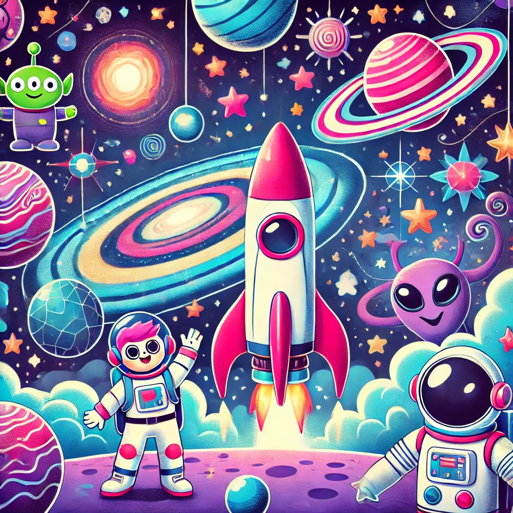
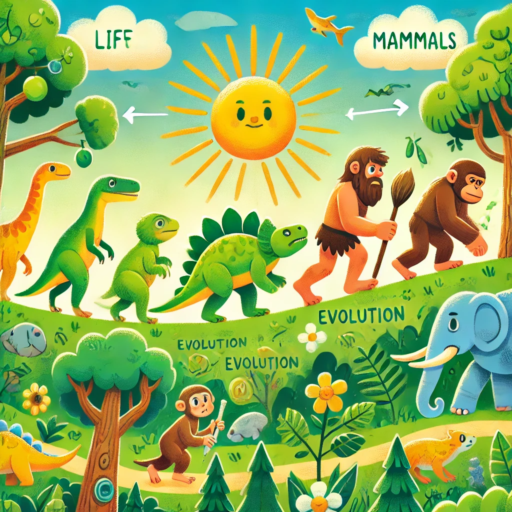

Exhibition Spaces
Visit Us
About Us
Contact Us
Exhibition Spaces

Cosmology
Read more here

Evolution
Read more here
Biology and Medicine
Read more here
Robotics and AI
Read more here
Ecology
Read more here
2024 © Community Science Museum